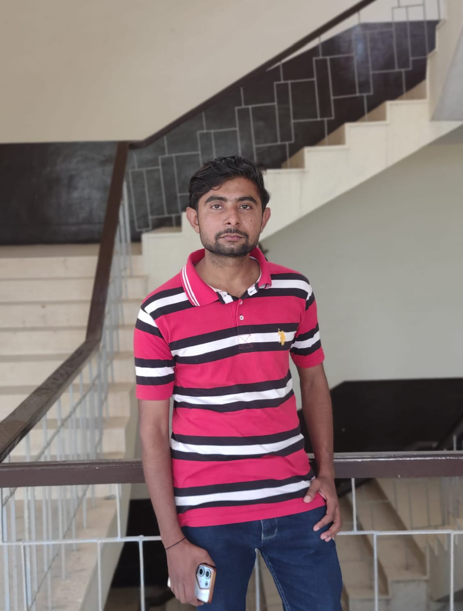
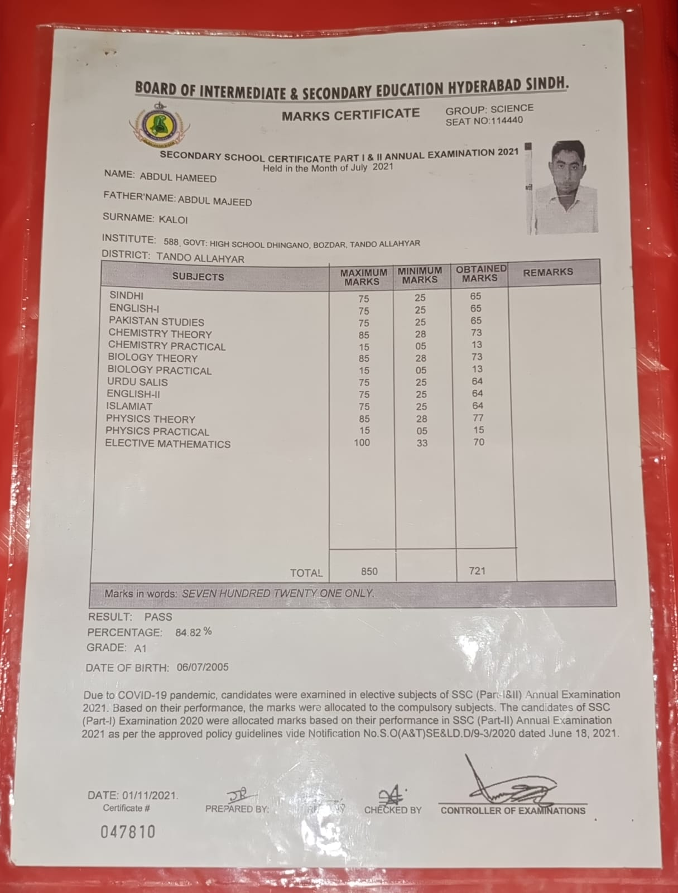
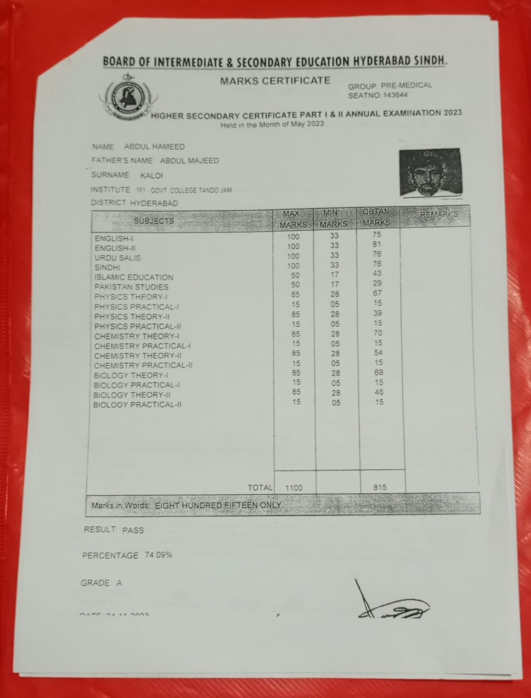
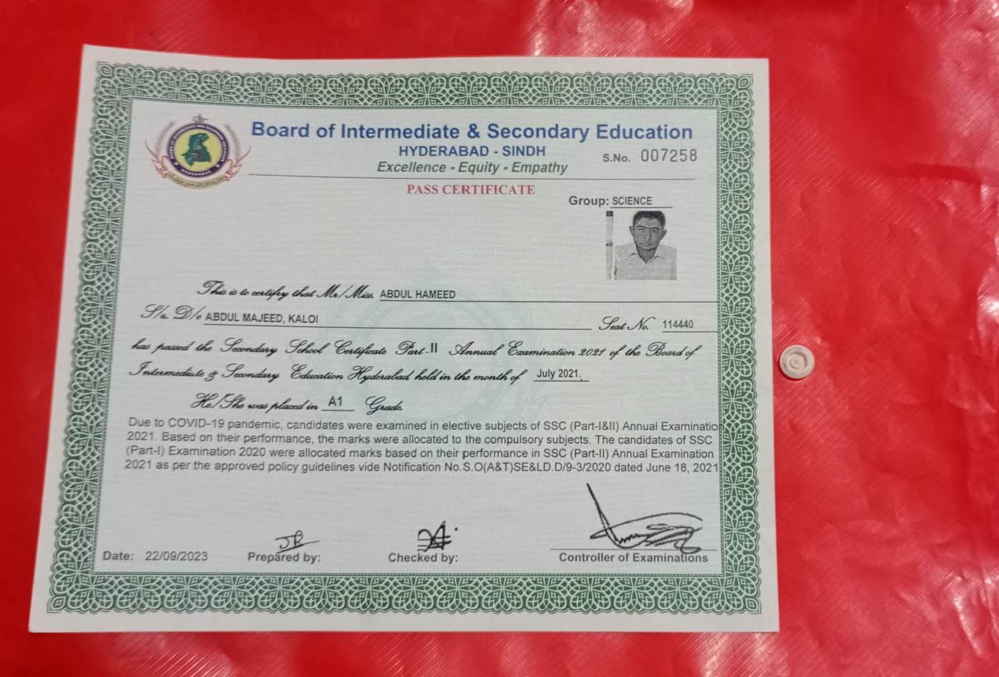
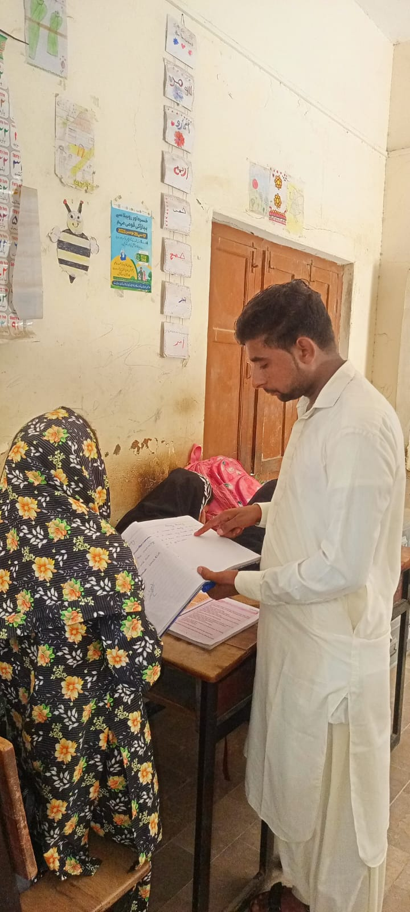
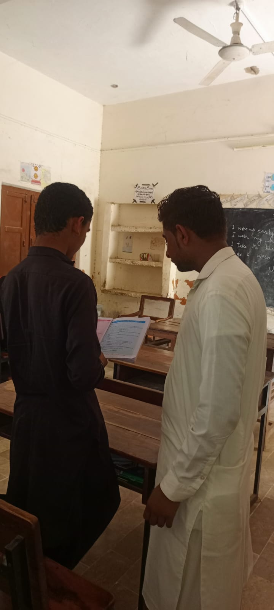
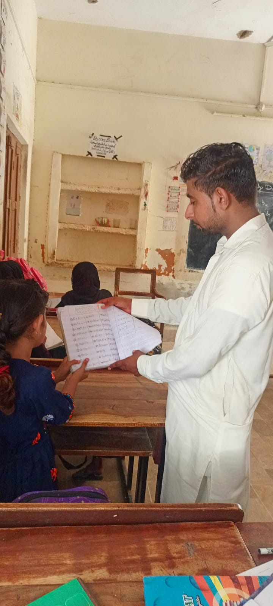

I am Abdul Hameed, a BS English Language Teaching (ELT) student at the University of Sindh, Jamshoro.
I am passionate about English language teaching, grammar instruction, vocabulary development, reading comprehension, and classroom communication.
This E-Portfolio highlights my academic journey, teaching internship, classroom activities, professional skills, and learning experiences.
My aim is to become an effective English language educator who helps students improve their language skills, build confidence, and develop a positive attitude towards learning.

Getting to know my academic background and teaching journey.
My name is Abdul Hameed, and I am studying BS English Language Teaching (ELT) at the University of Sindh, Jamshoro.
I have a strong interest in English language education and teaching methodologies. I believe that language learning involves more than memorizing grammar rules. It requires communication, understanding, practice, vocabulary development, and confidence.
During my academic journey, I have developed an understanding of English grammar, language skills, lesson planning, classroom interaction, and teaching strategies.
My teaching internship at GBPS Haji Khan Kaloi has provided me with an opportunity to apply my academic knowledge in a real classroom environment.
My long-term goal is to become a skilled and responsible English language teacher.
My academic records and educational achievements.
My 10th class marksheet.

My 12th class marksheet.

My Pass Certificate.

My classroom teaching experience and activities.
My teaching internship was an important part of my academic and professional development. During this experience, I worked with Grade 5 students and participated in different English language teaching activities.
I focused on improving students' understanding of grammar, vocabulary, reading, translation, and sentence construction.
I taught basic English grammar concepts to help students understand the structure and correct use of the English language.
Topics included:
I used simple explanations and examples to make grammar lessons easier for students to understand.
I helped students read their English textbook lessons and understand their meanings.
My activities included:
Translation helped students understand English lessons more effectively.
Vocabulary development was another important part of my teaching practice.
I helped students learn new English words and understand their meanings.
My activities included:
I encouraged students to improve their reading and writing abilities.
Activities included:
During my internship, I practised different teaching methods:
These methods helped me understand how to make classroom learning more effective and interactive.



Skills developed through my academic and practical experience.
What I learned during my teaching internship.
My teaching internship helped me connect theoretical knowledge with practical classroom experience.
Through this experience, I learned:
This experience increased my confidence and strengthened my interest in becoming an English language teacher.
Lessons learned from real classroom challenges.
During my teaching internship, I experienced different classroom challenges.
Some students needed additional explanations to understand English grammar and vocabulary. Others required support with reading, pronunciation, and sentence formation.
To address these challenges, I used simple examples, repeated explanations, translation, and question-and-answer activities.
I learned that every student has a different learning ability. Therefore, teachers should be patient, supportive, and flexible.
This experience taught me the importance of preparation, classroom management, and student-centred learning.
My teaching internship at GBPS Haji Khan Kaloi was a valuable learning experience.
It provided me with an opportunity to practise English language teaching with Grade 5 students and develop my professional abilities.
I gained practical experience in grammar teaching, lesson translation, vocabulary development, reading, writing, and classroom communication.
I believe this experience will help me become a more confident, responsible, and effective English language educator.
Thank You for Visiting My E-Portfolio!
My academic and internship details.